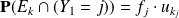
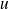
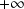

Sujet MP 2015-18 : Probabilités / corrigé complet
Le sujet est téléchargeable ci-dessous.
Le corrigé des questions de mathématiques est de François Sauvageot ! Merci à lui.
Un pion se trouve à l'instant 0 sur la case 0 d'un parcours linéaire dont les cases sont numérotées par les entiers consécutifs. À chaque étape, il avance d'un nombre strictement positif aléatoire de cases. Pour
 , on note
le nombre de cases dont il avance à la
, on note
le nombre de cases dont il avance à la « n »
-ième étape. Ainsi,
 est sa position à l'instant
est sa position à l'instant
 avec
par convention. On suppose que les variables
suivent toutes la même loi de probabilité et sont indépendantes. On note par conséquent
avec
par convention. On suppose que les variables
suivent toutes la même loi de probabilité et sont indépendantes. On note par conséquent
, et
respectivement la loi et la fonction génératrice de
. Par hypothèse,
ne dépend pas de
, et
 .
.
1. Dans cette question, on suppose que
suit une loi de Bernoulli de paramètre
 et on choisit un entier
.
et on choisit un entier
.
Question
1. a. Écrire une fonction en Python prenant en argument les paramètres
et
 et simulant l'expérience jusqu'à ce que le pion dépasse (au sens large) la position
. La fonction renverra 1 si le point a atterri sur la case
et 0 s'il l'a dépassée sans s'y arrêter.
et simulant l'expérience jusqu'à ce que le pion dépasse (au sens large) la position
. La fonction renverra 1 si le point a atterri sur la case
et 0 s'il l'a dépassée sans s'y arrêter.
Pour simuler une loi de Bernoulli, on pourra utiliser le volet Probabilités de l'aide documentaire.
Pour importer le volet Probabilités :
import numpy.random as rd
Une loi de Bernoulli de paramètre
peut être simulée par la fonction rd.binomial(n, p) en prenant simplement
.
def experience(p, k):
S = 0
while S < k:
S += 1 + rd.binomial(1, p)
return(int(S == k))
int(True) renvoie 1, et int(False) renvoie 0.
Question
1. b. Pour un entier
assez grand et des valeurs de
de votre choix, calculer sur une centaine d'essais la proportion de tentatives pour lesquelles le pion atteint la position
exactement.
Comparer avec .
J'ai fait une petite fonction pour simuler ces essais.
def essais(p, k, n = 100):
'''p : probabilité de la loi de Bernoulli, k : case à dépasser, n : nombre d'expériences menées.'''k_atteint = 0
for _ in range(n):
k_atteint += experience(p, k)
return(k_atteint / n)
L'espérance mathématique .
On peut donc comparer la proportion de tentatives pour lesquelles la position
est atteinte avec l'inverse de cette espérance.
def comparaison(p, k, n = 100):
return(essais(p, k, n) * (1 + p))
Voici quelques résultats.
In [36]: comparaison(0.2, 100)
Out[36]: 1.02
In [37]: comparaison(0.8, 100)
Out[37]: 0.864
In [38]: comparaison(0.8, 100, 500)
Out[38]: 1.08
On peut donc conjecturer que cette proportion est proche de .
Pour tout entier
, on note
et
.
Ainsi,
est la probabilité que le pion passe par la case
lors de son parcours.
Question
2. Soient . Démontrer que  .
La probabilité cherchée est . Par indépendance et puisqu'on a affaire à des variables identiquement distribuées, on a
et l'assertion s'ensuit.
Question
3. En déduire que .
Cela résulte de la formule des probabilités totales puisque est à valeurs dans
 et que si
, alors
.
et que si
, alors
.
On note

la fonction génératrice de la suite
 ,
,
.
Question
4. Justifier que est bien définie sur ]-1, 1[ et que
,
Puisque les coefficients de la série entière sont des probabilités, ils sont positifs et inférieurs à 1, donc la série a un rayon de convergence supérieur à 1. La question précédente montre, par produit de et puisque , sur .
L'assertion en découle.
Question
5. En déduire l'expression de
, celle de
en fonction de
et enfin la limite de cette suite lorsque
tend vers

dans les deux cas suivants :
a.
suit une loi géométrique de paramètre
,
b.
suit la loi de Bernoulli de paramètre
, comme à la question 1.
Déterminer par ailleurs dans les deux cas. Que remarque-t-on ?
5. a.
On a alors et donc . Il en résulte et pour . On a et .
5. b.
On a alors et donc . Par décomposition en
éléments simples et addition des séries entières obtenues, il vient
, i.e.
pour
dans
. On a de plus
et .